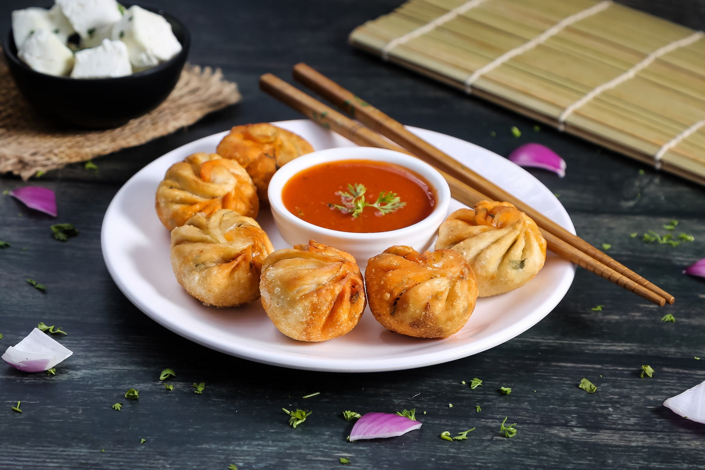
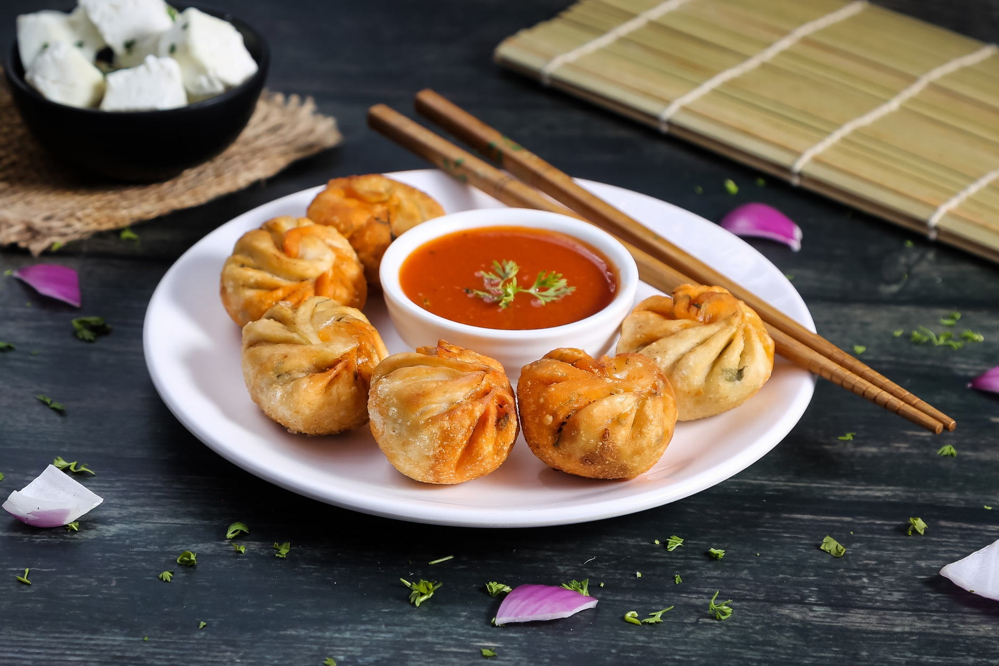

| Home | Momos Menu | Beverages |
Get ready for a flavor fiesta with Dumpling Delights Momos in India! 🥟✨ Imagine soft, pillowy momos bursting with deliciousness, bringing a taste of joy to your every bite. We're not just serving dumplings; we're dishing out happiness wrapped in a doughy embrace.
"Dumpling Delights brings the exquisite taste of Momos to India, crafting an experience that transcends borders. With a fusion of culinary mastery and cultural richness, our Momos redefine indulgence. Each bite is a journey through flavors, echoing the essence of tradition while embracing innovation. Discover the artistry of Dumpling Delights – where every Momo is a celebration of taste, carefully curated to delight your palate with every steamed or fried creation. Embark on a culinary adventure with us, as Dumpling Delights introduces a symphony of flavors to the heart of India, inviting you to savor the magic of Momos like never before."
Join the Dumpling Delights party – where good times and great flavors meet! Get ready to munch, crunch, and savor the yumminess with every bite. Your taste buds will thank you!"